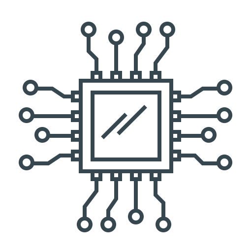

لمحة عن الجامعة
حقبة جديدة ومرحلة جديدة بحياتكم وحلوة بإذن الله متل ما بتعرفو صرتو جامعة وخايفين وصار في مسؤولية جديدة عليكم ومدري شو بس انتو قدا،هلأ الحياة الجامعية متل ما بيقولو من احلى فترات الحياة الي بعمركم ما رح تنسوها بس بدها تعب وجهد وطبعا سهر ليالي كتير بس اخر شي بتذوقو لذة النجاح انشالله،نحنا بالجامعة عنا كل المواد بتنقسم نظري و عملي العملي تقريبا بكون بين ال 20 و 30 علامة من 100 و الباقي نظري ولحتى تنجح بالمادة لازم يكون مجموع النظري والعملي فوق ال 60 ولح نشرح شلون بكون العملي بكل مادة ، هلأ نحنا بموقعنا هاد رح نحكي عن مواد قسم الألكترون لمحة صغيرة عنا وشلون ندرسا وملاحظاتا ومنرفع روابط المحاضرات والكتب والملاحق كلها بإذن الله.
نبذة عن القسم
بكل فصل دراسي يدرس الطالب من 6-8 مقررات، بعضها يمثل أساساً نظرياً للأخري كمقررات الرياضيات المتقدمة والإحصاء والفيزياء وعلوم المواد وحتى مواد من أقسام أخري ليكون الطالب على وعي عام يسمح له بالتفاعل مع بقية المهندسين في مختلف المجالات في سوق العمل. أما غالبية مواد التخصص فهي تنحصر في علوم الشبكات، الالكترونيات، الاتصالات، التحكم ، البرمجة
1_ الإتصالات : يدرس الطالب الأساس النظري لعلم الإتصالات والنظريات المتعلقة بإرسال وتشفير واستقبال المعلومات سواء كانت صوت أو صورة أو فيديو سواء كان ذلك علي نطاق جغرافي ضيق من خلال شبكات المحمول المحلية أو علي مستوي العالم أو المجموعة الشمسية من خلال الأقمار الصناعية.كما يدرس نظرية المعلومات وعلم الإحتمالات والانتروبيا والكثير من الرياضيات المتقدمة والمعادلات المعقدة اللازمة لمثل هذا التخصص
2_الإلكترونيات : يدرس الطالب بعض النظريات المستخدمة في تصميم وتحليل الإشارات والدوائر الكهربية وكيفية تصميم واستخدام المكونات الكهربية كالترانزستور والديود والمعظمات الكهربية لتخزين البيانات والمعلومات واسترجاعها كما الحال في الأقراص الصلبة والرامات . وأيضاً دوائر التحكم الكهربية التي تتواجد في جميع الأجهزة الكهربية
3_البرمجيات : تُدرس بعض لغات البرمجة مثل Java,C#,C++,C وجميعها تمثل أساساً يمكن للطالب التوسع من خلاله في علوم الحاسب ولتكون عوناً له في حالة أراد تصميم نظاماً كهربياً يعمل من خلال أجهزة الكمبيوتر
4_التحكم : في العصر الحديث تعتمد إنتاج التكنولجيا علي مصانع عملاقة تحتاج إلي عمليات تحكم آلية، وهي ما يدرس الطالب أساسياتها في هذا القسم ، حيث يدرس Microprocessors-Microcontrollers- Sensors وقد تدرس بعض الموضوعات المتقدمة مثل PLC – SCADA Systems
5_علم الشبكات : وهو يهتم بتشكيل المعلومات التي يتم نقلها علي الشبكات السلكية واللاسلكية مثل الانترنت بحيث تكون في أقل حجم ممكن وبأكبر دقة ممكنة ، كما يهتم بإدارة الشبكة بحيت تكون المعلومات المستلمة صحيحة وكاملة بدون أخطاء ومحمية من القرصنة الإلكترونية
مواد الفصل الأول
رياضيات 1
هي المادة حلوة سلسة وكتير حلوة مالا صعبة بس بدك تنتبه منا فيا نكشات بس درسا كل محاضرة بمحاضرتا بترفع بكل سهولة ومعدل كمان ان شاء الله. هلأ هي المادة مندرس فيا المصفوفات سهلة ومافيا شي ومناخد المتتاليات نفسا الي اخدناها بالبكالوريا ومندرس المتتالية العددية و المتسلسلات العددية يعني المتسلسلات بأنواعها ومندرس شوية عن الدوال والاشتقاق سهلة ما ؟ ^_^، كلو اخدينو بالبكالوريا بس كم شغلة جديدة
_ هي المادة مالها مخبر يعني بدكون تعملو مذاكرة لتحددو علامة العملي
روابط التحميل
فيزيا 1
_هلأ نحنا بالمادة الأصعب بالفصل الاول متل ما بينقال بس هي سهلة وما بدا شي بس بدا دراسة وتركيز عالي وتحضر كل محاضرة بمحاضرتا وتحاول تحل اكتر عدد من المسائل كل ما حليت اكتر كل ما بتفهم شلون الترتيب تبعن،
_هلأ بيقسمولنا النظري للمادة لجزئين جزء مناخد فيه فيزياء الميكانيك بيحكي عن الضغط وحالاتو وعن النواسات الي اخدناها بالبكالوريا بس مناخد جديد النواسات المتخامدة ،
_وجزء ضوئية مناخد فيه انواع الضوء وانعكاسه وانكساره والتداخل واخر شي استقطابه ،
_والعملي منروح عشي اسمو مخبر فيزيا موجود ببناء العلوم الاساسية تاني طابق بتروحو اول مرة بيعطوكن شي اسمو ارتياب وبيفرزوكم فئات فئة A و فئة B لان هاد المخبر اسبوع اي اسبوع لا وعلى حسبها بيعطوكم التجارب ، لازم تروحو عند دفرنت او ابو اديب تشترو دفتر فيزيا عملي لان بدكم تحضرو تجاربكم عليه ، بتجي عوقت فئتكم محضرين تجربتكم وبتفوتو على المخبر بجي المعيد وبيشرحلكم عن التجربة وبيسئلكم عنا يعني لازم تكونو حافظين وبيقلكم شلون تساوو التجربة وبتكتبو شو طلع معكم بالتجربة بالدفتر الي حكينا عنو ، هاد العملي عليه 30 علامة( 20 علامة للمخبر و10 من المذاكرة يلي بيعملا الدكتور ) وانتو بدكم 60 لتنجحو يعني مناح ال 30 مو هيك.
روابط التحميل
ميكانيك هندسي
مادة مو صعبة متل مو مبين اسمها بس طبعا هاد ما يعني انو نتركا لأخر الفصل لتنزنق فيها اكيد بدا دراسة وشغل، شو مناخد فيها؟ : مناخد فيها القوى وكيف بتأثر بالأجسام بالسكون و الحركة وكيف نسقط القوى على المحاور الأحداثية وكيف نحسب سرعة وتسارع الأجسام
_ هي المادة مالها مخبر يعني بدكون تعملو مذاكرة لتحددو علامة العملي
روابط التحميل
رسم
_ اجينا عالمادة الممتعة يلي بتحس حالك فيها مهندس كبير وما حدا قدك طبعا المادة كلها رسم يعني من الاخر مادة ما رح تمل منا الا اذا الدكتور اخد ال4 ساعات كلها،
_مكان الحضور بيكون بمبني اسمو مبنى الورشات B هاد ورا بناء الطبية (المبنى الاحمر) بتروحو عبناء الورشات B تاني طابق وفي هنيك مراسم بتشوف بالبرنامج اي مرسم لازم تحضرو فيه ،
_علامة العملي بتنقسم عالحضور والوظايف الي بيطلبا منك الدكتور والمذاكرة الي بيعملا بعد ما يعلمك شلون المشاريع بتنرسم ،
_ الأدوات الي بدكم ياها
هلأ اول شي بدكم ياه دفتر اسمو دفتر كارويات اي كارويات هاد بيجي مقسم بيساعدك بالرسم وبدكم مسطرة بسموها مسطرة T لان شكلها متل ال T و المثلثات القائمة بيكونو زواياه التانية 60 و 45 هي بتساعدكم بالرسم بس مو كتير ضرورية وبدكم لزيق نوعو شو ما كان يكون المهم لزيق مشان تلزقو مشاريعكم عليها لان بيطلب منكم كراتين A3 للمشاريع بعدين وهو بيطلب منكم نوطة لان بيعطي وظايف عليها والمشاريع النهائية عليها نحنا رح نرفعلكم ياها محلولة pdf انشالله وطبعا مو محتاج قلك قلم ومحاية .
روابط التحميل
انكليزي 1
هلأ نحنا بالجامعة مناخذ لغة اجنبية يعني مو ضروري انكليزي يمكن تكون فرنسي يمكن روسي او اي لغة تانية على حسب انت شو مفاضل 'وانت عم تفاضل للجامعة بيسألوك اي لغة بدك وانت بتنقي' هلأ نحنا هون لح نحكي ونرفع روابط بس للأنكليزي ليش؟ لأنو انا شخصيا عندي انكليزي والشعب كلو انكليزي وانت عالأغلب انكليزي ف مشان هيك اما بالنسبة للناس اللي ما عندها انكليزي ف انا اسف بس لاقي ملفات لح حاول ارفعها انشاء الله
_شلون ندرسا ؟
في طريقتين اما انك تحضر مع الدكتور كل المحاضرات وتدرسا أو انك ما تحضر ولا محاضرة ولا تعذب حالك اخر الفصل بينزل ملحق للمادة بتدرسو و انشالله بتنجح وبترفعا معدل كمان ولح نرفع الملحق تبع سنتنا pdf بأذن الله
_هي المادة اتمتة يعني الأسئلة كلها اختر اجابة بالامتحان وما فيها عملي يعني الامتحان من 100 لتنجح بدك 60
روابط التحميل
عربي
مين منا ما بيعرف يحكي عربي
هي المادة الي بترفعا بدون ما تحضر ولا محاضرة بترفعا معدل كمان ، هي المادة أتمتة بين ال50 و ال60 سؤال يعني سهلة ومافيا شي
_مناخد فيا قصيدتين ودرس العدد والمعدود من التاسع ومناخد المعاجم وانواعا وتواريخا وكتّاب المعاجم وطبعا الإعراب.
روابط التحميل
ثقافة
مادة مالا علاقة بلياقة ولا بفرعنا ولا بالهندسة ولا بأي شي بس مادة سهلة بتترفع من أول سنة بتحكي المادة عن تاريخ الأمة العربية والحروب اللي صارت مع الكيان الصهيوني (يعني مو ثقافة يعتي تاريخ )
_طيب ليش عم ناخد هيك شي؟
مشانك انت كمهندس تكون بتعرف كلشي يعني مو معقول انت مهندس بتعرف توصل دارات وتحل اي معادلة بس ما بتعرف ايمتى حرب تشرين التحريرية
_كيف مندرسا؟
متل الأنكليزي كمان في ملحق بينزل اخر الفصل قبل الامتحان بشوي بتدرس منو وبتنجح وبترفعا انشالله نحنا لح نرفع ملحق سنتنا pdf بتشوفو اكيد في اشياء مشتركة من سنتنا
_هي المادة كمان اتمتة متل الأنكليزي و ما فيها عملي يعني الأمتحان النظري من 100
روابط التحميل
مواد الفصل الثاني
رياضيات 2
مادة متل كل مادة من مواد الرياضيات اذا درست كل محاضرة بمحاضرتا بتنجح ما درست سلملي عالشهدا يلي معك
_شو مناخد فيها؟
بتنقسم لقسمين
أول قسم عن التكامل كيف نكامل اي شكل من أشكال التوابع (تآلفي ، كسري ، جذري ، مثلثي ، لوغارتمي ، آسي ..آلخ) ومنحكي عالتكامل المحدد وتطبيقاتو (حساب مساحة ، حساب حجم ، حساب طول منحني ، حساب حجم منحني "اي حجم منحني" ، حساب مركز ثقل المستوي)
_ثاني قسم بيحكي عن المعادلات التفاضلية شو هي وكيف منحلا وحكي بيملل وما بينفهم
طيب منشرحا نحنا شوي
المعادلات التفاضلية هي معادلات تحوي مشتق اما مشتق المتغير اما مشتق التابع او التنين
كيف منحلا ؟
هيك حتاخدو بالمحاضرات اكيد مالح اشرحها هون
_هي المادة مالا مخبر (بظن بتعرفو) يعني علامة العملي من المذاكرة (كمان بظن بتعرفو) الدكتور بحدد امتى (كمان بظن.....)والعلامة من 20 (العملي)
روابط التحميل
فيزيا 2
هلأ نحنا بالمادة الأصعب بالفصل جزء تاني
هي المادة أمتع وأحلى من الفيزيا1 بكتير بس كمان متل ما حكينا بالفيزيا1 بدا تركيز وتحضر كل محاضرة بمحاضرتا وبترفعا معدل كمان،
_ هون بقسمولنا النظري ل3 أجزاء
جزء مناخد فيا الكهربا الساكنة والحقل الكهربائي وقوانيو والكمون الكهربائي والقوى المغناطيسية ،
_وجزء ضوئية متل الفيزيا1 بس مناخد فيه الليزر وتطبيقاتو،
_وجزء اسمو الفيزياء الحديثة مناخد فيه النسبية و علم الكم ،
_والعملي متل الفيزيا1 بالضبط بس بتجارب الفصل التاني يعني تجارب الفصل الاولى مو متل الفصل التاني بيتغيرو بس نفس النظام ونفس الادوات يعني ما بتشترو شي جديد ابدا،
_متل ما قلنا العملي عليه 30 علامة 20 منا للمخبر و 10 للمذاكرة يلي بيعملا الدكتور،
والنظري 70 بالامتحان الاخير .
روابط التحميل
أسس كهربائية
هي المادة الي بتدخلكم باجواء الهندسة والكهربا وبتخليك تحب وتتعمق بفرعك اكتر واكتر ،
_المادة هي الها مخبر عليه 20 علامة سهلين مناخدن ومنمشي
شلون مناخدن؟
بتعملو تجارب متل تجارب مخبر الفيزيا تماما بس قصة تانية يعني كهربا وتوصيل دارات وهكذا ...،
موجودين التجارب بالروابط هنن بقلولكم التجربة الي رح تاخدوها التجارب بسيطة والدكاترة شرحن حلو وسلس ،
مكان المخبر موجود بقبو بناء الطاقة،
اخر شي بيعملوا امتحان يعني لازم تتدرسو منيح وتفهمو تجاربكم،
_الجزء النظري الي فيو حسابات دقيقة وقوانين جديدة عليكم ،
مناخد فيه كيف تحل دارة كهربائية(يعني توجد مقاومات - تياريات - توترات - سعات مكثفات ....) للدارة ،
المادة بتغير مفهومكم شوي عن الكهربا والدارات وبتخليكم تفكرو بطريقة تانية .

روابط التحميل
مدخل للحاسوب
مادة سهلة بسيطة بتحسسك بالأمان بهالفصل قدام المواد التانية بتترفع بدون دراسة على ما قد هي سهلة
_شو مناخد فيها؟
من اسمها "مدخل" مندخل لعالم الكمبيوتر من شو بيتكوّن شلون بيشتغل وشلون بتشتغل كل قطعة فيه ومناخد فيها انظمة العد (الثنائي ، الثماني ، السداسي عشر ، ...) ومنروح منشوف الخوارزميات
_هالمادة معها مخبر موجود ببناء الأتصالات اول طابق بتروح بتقعد على كمبيوتر بتلعب دق كونتر مع الشباب وبتنبسط وبتروح بترجع على ملل المحاضرات عم امزح مناخد فيه اول شي عن نظام الويندوز كيف تشتغل عليه ومفاهيم اساسية لاوم تكون تعرفها بعدين منتعرف على برنامج الوورد والأكسيل والباوربوينت وكيف نشتغل عليهن
_علامة العملي لهلمادة بس بالمخبر ( الا اذا حب دكتور النظري يعمل مذاكرة ) بيعملو مذاكرة و كل مذاكرة بتكون على قسم ( ويندوز ، وورد ، اكسيل ، باوربوينت )
روابط التحميل
كيمياء
هي المادة بينقال عنا "ممتعة و مو ممتعة"
مو ممتعة بقسمها النظري يلي بيحكي عن الترموديناميك والغازات (تقريبا نفسا يلي بالبكالوريا ) وعن الكهركيميا وشغلات بتملل
ممتعة بقسمها العملي لأنو بتحس حالك كيميائي كبير وانت لابس المريول الأبيض (بقلولكم جيبوه بس مو ضروري) عم تعمل التجارب يلي بمخبر
طيب شو هنن التجارب
1_معايرة : نفسا يلي بالبكالوريا بس هون منطبقا عملي منعاير حمض قوي (حمض كلور الماء) مع اساس قوي(هيدروكسيد الصوديوم)
2_تحديد القساوة الكلية للماء: منعاير الماء بمحلول EDTA (مابعرف شو هو بالظبط) لنشوف كمية الكلس يلي بالماء حتى نعرف اذا هاد الماء بينشرب ولا لا (بيطلع بينشرب شربوه لا تخافو)
3_معايرة حمض الحماض مع فوق منغنات البوتاسيوم : معايرة عادية ما فيها شي بس انو المشعر هو فوق منغنات البوتاسيوم نفسو ومعادلاتها اكسدة وارجاع
4_معايرة كبريتات الحديدي مع ثنائي كرومات البوتاسيوم : كمان معايرة عادية بس هون المشعر خارجي (ما منحطو بالمحلول)
5_تعيين معامل التوزع الأنحلالي لليود بين الماء ورباعي كلور الكربون : هي التجربة مو معايرة (واضح من اسمها) منحدد فيها نسبة انحلال اليود بالمركبات
6_تعيين حرارة تعديل تفاعل حمض مع أساس : هي التجربة لنقيس كمية الحرارة المنطلقة من تفاعل حمض مع أساس (واضح من أسمها)
7_تحديد القلوية الكلية و الجزئية للماء : بهي التجربة منقيس نسبة الهيدروكسيد و الكربونات و البيكربونات بالماء ليش؟
مشان نحسب قلوية الماء (واضحة صح)
_لح نحط رابط كل ملخصات التجارب وكيفية العمل تحت
_المخبر موجود ببناء العلوم الأساسية اخر الطابق الأول (نفس الطابق مع مخبر الفيزيا)
_علامة العملي بتنقسم 10 علامات بمذاكرة الدكتور
و 20 علامة من المخبر
روابط التحميل
انكليزي 2
متل الانكليزي 1 ما في شي جديد بدك تحضر المحاضرات وبدك ما تحضر اخر الفصل بينزل ملحق شامل بتدرسو و بترفعا انشالله
_كمان هي المادة اتمتة وما فيها عملي
روابط التحميل